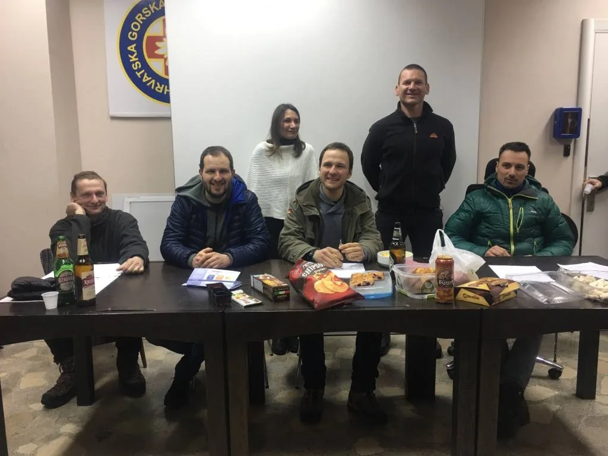

Održana godišnja skupština SOV
Početak godine uvijek je rezerviran za službeni osvrt na rad u protekloj. Uz zadovoljenje svih statističkih potreba, izabrali smo i novo vodstvo Odsjeka

U petak 23. veljače održana je godišnja skupština SO i SD Velebit. Ovogodišnja skupština je održana u prostorima doljnje stanice nekadašnje sljemenske žičare koju sada koristi HGSS stanica Zagreb. Osim članova SO i SD Velebita sastanku su prisustvovali i članovi SO Željezničar.
Skupština je započela minutom šutnje za sve preminule članove PDS Velebita tijekom prošle godine. Tijekom zasjedanja skupštine dosadašnje vodstvo je pred nazočne članove iznijelo svoje izvještaje za 2017. godinu te je potom razriješeno dužnosti. Predloženo je novo vodstvo SO Velebita koje je jednoglasno izabrano, a ekipu čine: Marina Grandić – arhivarka, Stjepan Dubac – bibliotekar, Marijan Sutlović – oružar, Marko Rakovac – tajnik i Luka Havliček – pročelnik.
[caption id="attachment_1821" align="alignnone" width="1024"] Novo vodstvo SO i SO Velebit: Dalibor Paar, Marijan Sutlović, Marina Grandić, Luka Havliček, Stjepan Dubac, Marko Rakovac[/caption]Novoizabrano vodstvo speleološkog odsjeka je predstavilo plan rada za 2018. godinu, kao i financijski plan koji su jednoglasno prihvaćeni.
Nakon formalnog dijela skupštine zabava i druženje su nastavljeni dugo u noć uz dobru glazbu, klopu i cugu, te neizbježni stolni nogomet!
Iz Tajničkog izvješća za 2017. godinu:U 2017. godini u prostorijama PDS „Velebit“ održano je 49 formalnih sastanaka speleološkog odsjeka. Nekoliko sastanaka nije održano zbog preklapanja datuma sastanka sa istraživanjima tijekom ekspedicija.
Tijekom 2017. godine ukupno je bilo 95 speleoloških izleta što je 22 % više u odnosu na broj izleta u 2016. godini. Izleti su provedeni s jednom ili više različitih svrha. Ukupno 42 izleta su bila istraživanja speleoloških objekata u svrhu inventarizacije prirodnih vrijednosti RH, 33 izleta sa svrhom monitoringa, 10 turističkih posjeta, 8 izleta sa svrhom znanstvenih opažanja i izmjera te 7 izleta sa svrhom rekognosticiranja terena. Također, 11 izleta provedeno je u sklopu aktivnosti drugih speleoloških udruga te jedan izlet u sklopu inicijative „Čisto podzemlje“.
Najviše se ulazaka bilo je u objekte Kita Gaćešina – Draženova Puhaljka (12 ulazaka), Veternica (8 ulazaka), te u Slovačku jamu.
Neki od izleta sa najvećim odazivom članova su Glogovo (25-26.ožujka.2017.) na kojem je sudjelovalo 12 članova odsjeka, istraživanje u Kiti Gaćešini (13.-16.travnja.2017) te istraživanja na području Glogova u periodu od 17. do 19.ožujka 2017. na kojima je sudjelovalo po 10 članova speleološkog odsjeka.
Najaktivniji članovi su Ana Bakšić (32 speleološka izleta), Luka Havliček (22 speleološka izleta) i Darko Španja (18 speleoloških izleta).Tijekom 2017. održane su dvije speleološke ekspedicije.
U razdoblju od 22. lipnja do 6. srpnja 2017. organizirana je speleološka ekspedicija „Slovačka jama 2017.“ Kroz ekspediciju je prošlo 52 speleologa iz različitih zemlja. Istraženo je sveukupno 75 m novih kanala, što smješta Slovačku jamu na 7. mjesto najduljih speleoloških objekata u Hrvatskoj. Jama je tehnikom speleoronjenja produbljena za 4 m, čime nova dubina iznosi 1324 metra. U razdoblju od 28. srpnja do 5. kolovoza 2017. godine organizirana je speleološka ekspedicija „Rožanski kukovi 2017.“ u okolici vrha Crikvene i Krajačevog kuka. Kroz ekspediciju je prošlo 32 speleologa iz te su istražena 22 nova objekta.
47. zagrebačku speleološku školu PDS „Velebit“ uspješno je završilo 20 polaznika. Zvanje speleološkog pripravnika stekli su ispitom na Rokinoj Bezdani 07. svibnja 2017., učeći i vježbajući prethodnih tridesetak dana.
Speleološkom ispitu za 2017. godinu koji se održao 28. siječnja 2017. u Baškim Oštarijama pristupio jedan kandidat speleološkog odsjeka.
Članovi PDS Velebit aktivno su sudjelovali na Međunarodnom znanstveno-stručnom skupu "Georaznolikost, geobaština i geoturizam u krškim područjima" održanom je u Pećinskom parku Grabovača u Perušiću u periodu od 18.-19. veljače 2017., zatim od 19. – 21. lipnja 2017. na 25. Međunarodnoj školi za krš, „Klasičan krš“ te na Skupu speleologa u Dubrovniku od 17. do 19. studenog 2017.
Rezultati istraživanja SOV-a prezentirani su još i na stručnom skupu o budućnosti istraživanja u NPSV u Krasnu, te na međunarodnim znanstvenim skupovima u Zadru (Čovjek i krš) i Paklenici (INQUA).
Također prisustvovalo se na četiri seminara u organizaciji Komisije za speleologiju Hrvatskog planinarskog saveza. To su Seminar o speleološkoj edukaciji održanom 28. siječnja 2017. u Baškim Oštarijama, Seminar o samospašavanju, zbrinjavanju i pružanju prve pomoći za speleološke udruge održanom od 27. do 28.svibnja u Zagrebu, Seminar o digitalizaciji speleološkog nacrta održanom 23.rujna 2017. u Karlovcu te Seminaru o topografskom snimanju speleoloških objekta održanom od 2. do 3.prosinca 2017. u Dubravi kod Šibenika.
U protekloj godini predstavljena je i nova web stranica SOV-a (upravo ste na njoj :) ), a važno je istaknuti veliki doprinos SOV-a u dizajniranju Kuće Velebita u Krasnu. [gallery ids="1814,1815,1816,1817,1818,1819,1820,1821" type="rectangular"]